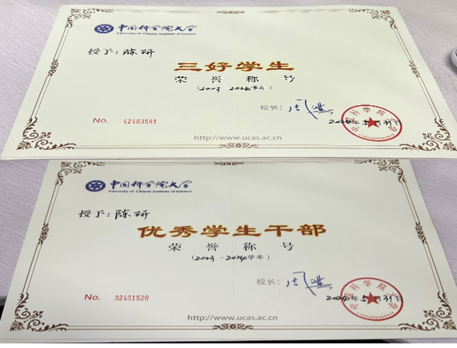
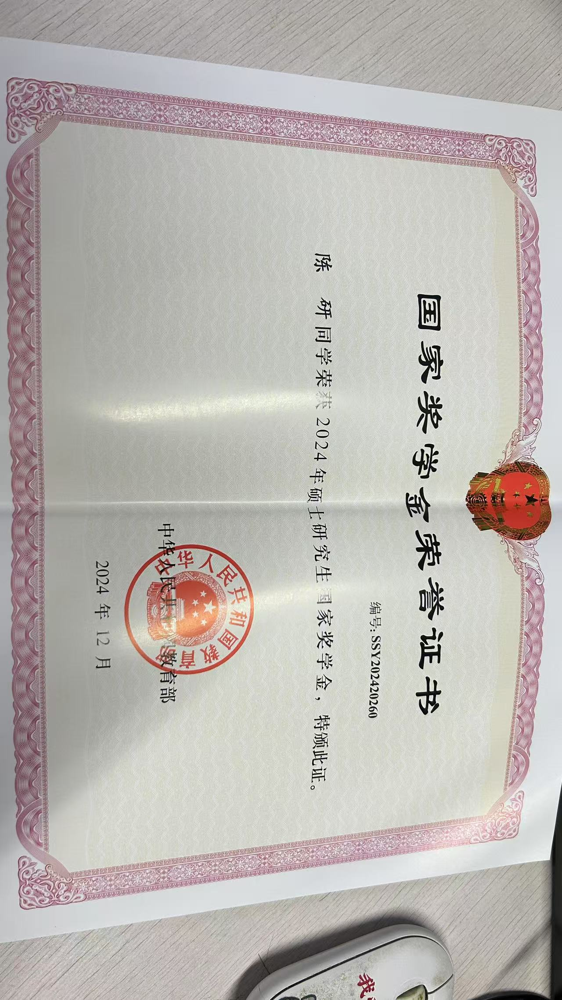

关于
关于我
我关注物理海洋与沿海灾害过程，重点研究风暴潮、极端海平面与气象海啸识别诊断。
学术与技术聚焦
- 当前重点：气象海啸、沿海洪涝、风暴潮与极端海平面放大
- 中国科学院大学物理海洋学硕士（2022-2025），GPA 3.8/4.0
- 中国地质大学（北京）地下水科学与工程本科（2018-2022）
- 模型与分析工具：SCHISM、POM、WWM-III、Python、MATLAB、Fortran
- 语言成绩：英语六级 551，雅思 6.5
研究兴趣
- 洪涝与淹没过程
- 风暴潮与海浪
- 水文地质与地下水
- 气象海啸

模型相关图像


奖项与荣誉
- 中国科学院大学三好学生（2025）
- 研究生国家奖学金（国科大，2024）
- 中国科学院大学三好学生（2023）
- 中国科学院大学优秀团干部（2023）
- 中国地质大学（北京）学业奖学金（2019）

